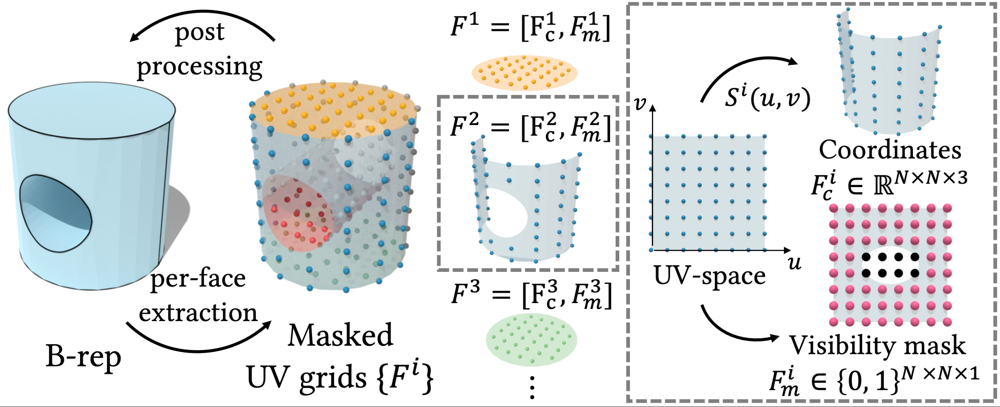
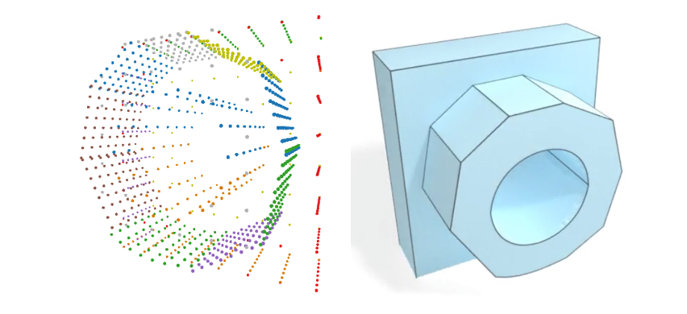
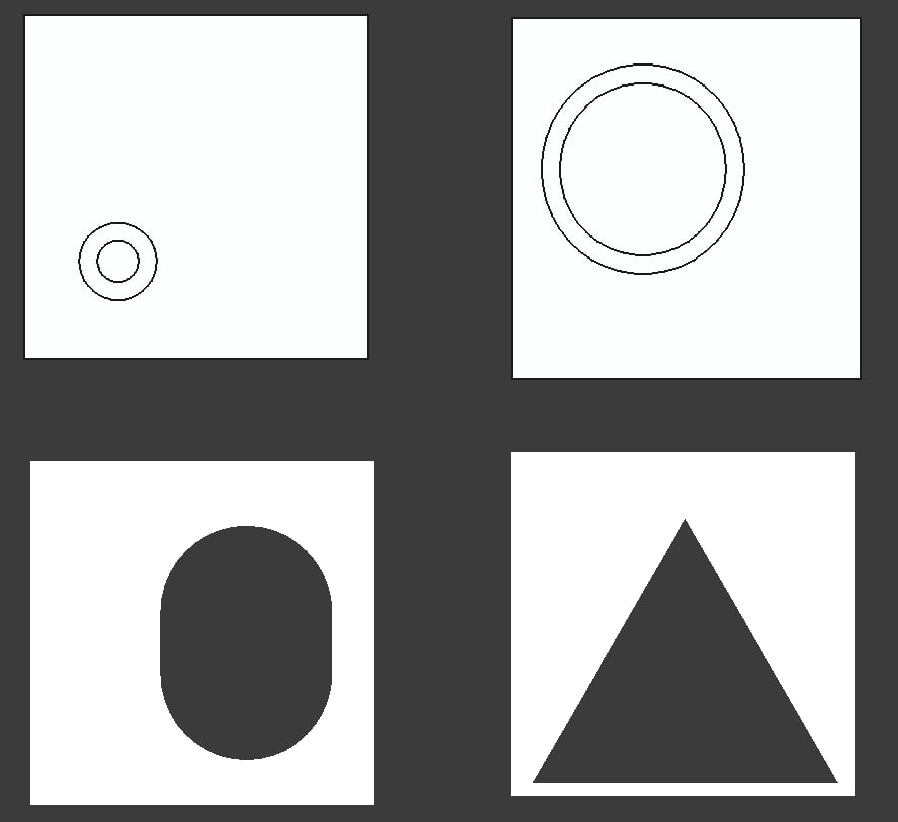
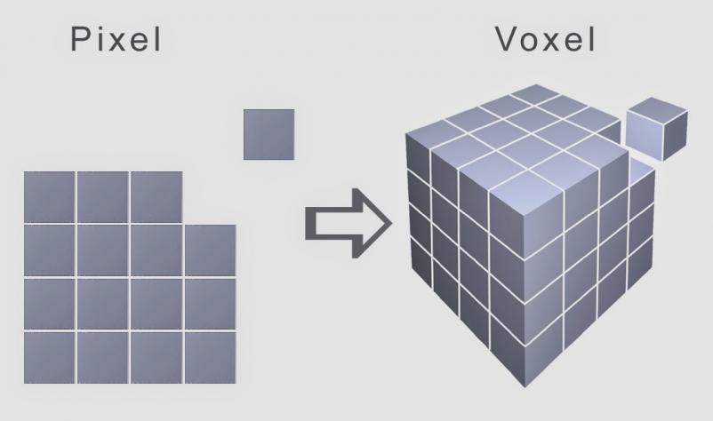
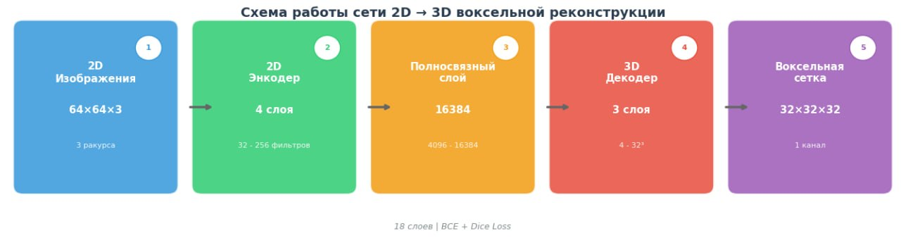
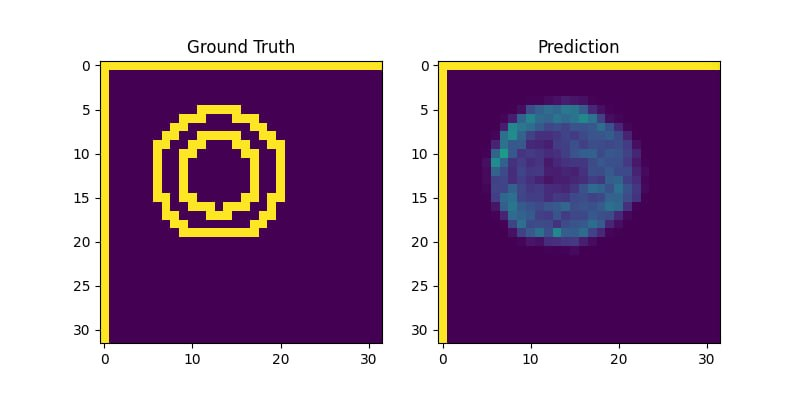

Development of a System for 3D Model Reconstruction from Images
Abstract of the research work
Field of study: 01.04.02 “Applied Mathematics and Computer Science”
Programme: “Programming Technologies and Development of Information and Communication Systems”
Polina Antonovna Storozheva
Krasnodar, 2026
1. Relevance of the Research Topic
In modern engineering practice, computer-aided design systems, and computer vision, the automatic reconstruction of the three-dimensional geometry of objects from their two-dimensional images is of particular importance. Solving this problem makes it possible to automate reverse engineering processes, improve the accuracy of object recognition and analysis in machine vision systems, and accelerate the development and modification of models in CAD systems.
3D reconstruction technologies are used in industry, robotics, medicine, virtual reality, and augmented reality. At the same time, creating a three-dimensional model manually requires considerable time and specialized skills in working with 3D modelling software.
The use of computer vision and neural network methods makes it possible to automate individual stages of geometry construction. Of particular interest are methods capable of obtaining information about an object's spatial structure from several two-dimensional projections.
The relevance of this research is determined by the need to develop a software tool that combines image preparation, data processing, neural reconstruction, and subsequent visualization of the resulting 3D model.
2. Aim and Objectives of the Research
The aim of this work is to develop a software system for reconstructing three-dimensional object models from their two-dimensional images using computer vision and neural network methods.
To achieve this aim, the following objectives must be addressed:
- Study existing methods and algorithms for reconstructing three-dimensional objects from images.
- Review modern neural network architectures used for 3D geometry reconstruction.
- Investigate methods of representing three-dimensional objects, including voxel-based and boundary-representation models.
- Develop algorithms for preparing input data and creating a training dataset.
- Implement software tools for generating images of objects from different viewpoints.
- Develop and train neural network models for reconstructing the three-dimensional structure of objects.
- Evaluate reconstruction results using quality metrics.
- Develop an interface for viewing and editing the resulting 3D models.
3. Object and Subject of the Research
The object of the research is the process of automated reconstruction of the three-dimensional geometry of objects from two-dimensional images.
The subject of the research includes computer vision methods, neural network architectures, data preparation algorithms, and methods of representing 3D geometry used to reconstruct the spatial structure of objects.
4. Analysis of Existing Reconstruction Methods
One of the common methods of representing the geometry of three-dimensional objects is Boundary Representation (B-Rep). This approach describes a solid through a set of surfaces, edges, and vertices, as well as the relationships between them. Unlike a simple shape representation, B-Rep makes it possible to store information about an object's structure and the relative positions of its geometric elements.
B-Rep is widely used in computer-aided design systems because it provides an accurate description of an object's surface and topology. However, directly reconstructing this representation using neural networks is a complex task that requires geometric and topological constraints to be taken into account.
4.1. BrepDiff Model
BrepDiff is a diffusion-based approach to generating boundary-representation CAD models. The method is based on representing geometric surfaces and their associated B-Rep elements.
This approach uses UV representations of faces, which make it possible to describe surface geometry in parametric space. The diffusion model progressively reconstructs the data required to obtain the geometric structure of an object.



4.2. CLR-Wire Approach
Another approach considered in this work is CLR-Wire, which focuses on generating wireframe representations of three-dimensional objects. In this representation, the main emphasis is placed on edges and the vertices connecting them.
A wireframe description makes it possible to represent an object's structure as a set of spatial curves. This approach can be used as an intermediate stage in constructing more complex geometry.
The methods considered demonstrate the potential of neural network architectures for working with CAD geometry. At the same time, practical implementation of the system must take into account the complexity of processing source models and the computational costs.
5. Selection of a 3D Data Representation
To train neural network models, the original geometry must be converted into a format suitable for machine learning algorithms. One possible option is a voxel representation.
A voxel model is a three-dimensional grid in which each cell contains information about whether a part of an object is present in the corresponding region of space. This representation makes it possible to use three-dimensional convolutional neural networks to reconstruct object shapes.


The advantages of voxel representation include the simplicity of training data generation and the ability to use standard three-dimensional convolution operations. Its disadvantages include an increase in data volume as grid resolution grows, as well as limited accuracy when describing small geometric details.
6. Development of the Software System
6.1. Problem Statement
The system under development is intended to reconstruct the three-dimensional shape of an object from a set of its two-dimensional projections. The software must provide input data preparation, image processing, transfer of information to a neural network model, and visualization of the resulting output.
The input data consist of images of an object taken from different viewpoints. The output is a three-dimensional representation that can be viewed and modified using the program interface.
6.2. Technologies Used
Python was selected as the primary programming language. The PyTorch and TensorFlow libraries are used to develop and train neural network models. Data preparation and operations on three-dimensional objects are performed using specialized geometry-processing tools.
Three-dimensional rendering tools are used to visualize the results. The use of these technologies makes it possible to combine training data preparation, model training, and result viewing within a single software system.
6.3. Preparation of the Training Dataset
An important stage of development is the creation of a dataset containing three-dimensional objects and their corresponding images. For this purpose, the original models are processed and converted into representations used during training.
For each object, images are generated from several directions. Using different viewpoints provides the model with additional information about the object's spatial shape.

6.4. Neural Network Model Training
A neural network architecture is used to reconstruct the three-dimensional structure. It includes a stage for extracting features from input images and a stage for generating a three-dimensional representation.
At the encoding stage, the input data are converted into a compact internal representation. The decoding part of the network then uses the extracted features to reconstruct the object's spatial structure.
During model training, prepared data pairs are used. These pairs include input images and their corresponding reference three-dimensional representations. Reconstruction quality is evaluated by comparing the predicted structure with the original one.
7. Experimental Results
After the training dataset had been prepared, neural network models were trained. The experiments analysed changes in the loss function and the quality indicators of three-dimensional object reconstruction.

The Intersection over Union (IoU) metric was used to evaluate reconstruction quality. It makes it possible to determine the degree of overlap between the predicted and reference voxel representations. Accuracy and completeness of reconstruction were also analysed.



The experimental results show that the neural network approach makes it possible to reconstruct the overall shape of objects from their images. The quality of the result depends on geometric complexity, the resolution of the three-dimensional grid, and the characteristics of the training dataset.
The analysis also takes into account possible differences between reconstruction precision and completeness. The model may generate a sparser representation than the reference shape, omitting certain elements of the original structure.


8. Development of the System Interface
A graphical interface is provided to enable users to interact with the developed software. The program starts by loading and processing the input images. The system analyses the two-dimensional projections, identifies characteristic contours, and forms an initial representation of the object.
After the input data have been processed, the computational model is launched to reconstruct the three-dimensional structure. The resulting output is then transferred to the visualization module.

Using the interface, the user can inspect the generated shape, adjust its dimensions, and obtain general information about the object. Thus, the system combines computational functionality with tools for visual interaction with reconstruction results.

9. Practical Significance of the Work
The practical significance of this research lies in the development of a software tool that makes it possible to automate individual stages of reconstructing three-dimensional objects from images. The implemented algorithms can be used to prepare training data, conduct experiments with neural network architectures, and analyse reconstruction results.
The developed system can serve as a basis for further research into geometry reconstruction methods and the integration of neural network models into computer-aided design processes.
10. Conclusion
During this work, modern methods for reconstructing three-dimensional models from images were studied, the characteristics of different geometry representation methods were considered, and neural network approaches used to solve this problem were analysed.
A software system was developed in Python to prepare training data, generate images of objects from different viewpoints, train neural network models, and visualize the results. The implementation uses the PyTorch and TensorFlow libraries.
The models were trained, and the obtained results were analysed using quality metrics. An interface was developed that allows users to view reconstructed objects and interact with the resulting three-dimensional representations.
The results confirm the possibility of applying neural network methods to reconstruct the three-dimensional shape of objects from two-dimensional images. Further development of the system involves improving reconstruction detail, enhancing the processing of complex geometric objects, and investigating methods for obtaining more accurate CAD models.